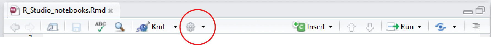

Si estás trabajando en el laboratorio o en el campo, es esencial tomar buenas notas sobre lo que estás haciendo para poder recordar tus métodos y asegurarte de que tu trabajo sea reproducible.
De manera similar, una vez que estés trabajando con los datos que has recopilado, es fundamental tener buenas notas sobre cómo has procesado esos datos. Te ayudarán a comprender exactamente lo que estás haciendo y serán necesarias para escribir secciones de métodos y comunicar tanto los métodos como los resultados a colaboradores o supervisores.
En un script tradicional de R, todo el texto es código y los comentarios se separan del código ejecutable comenzando una línea con #. Por ejemplo,
plot(y ~ x)Esto puede volverse confuso si tienes muchos comentarios, por lo que recomendamos utilizar notebooks de RStudio como una forma muy limpia de escribir tu código con los comentarios correspondientes.
Los notebooks de RStudio son una forma de documento markdown, un formato ampliamente utilizado para exportar texto y código a varios formatos de informe. Todas las páginas web de este sitio comienzan su vida como archivos markdown con todo el texto y código necesario para generar el archivo html. Los notebooks de RStudio tienen la ventaja adicional de mostrar la salida de tu código directamente en el documento.
Crear un nuevo notebook es tan sencillo como hacer clic en File, New file, R Notebook en el menú de RStudio. Necesitarás una versión reciente de RStudio, así que actualízalo si es necesario.
Guarda el archivo en una carpeta de tu computadora. Esta carpeta se convertirá en el directorio de trabajo para cualquier código en tu notebook y no es necesario establecer el directorio de trabajo.
Edita el título en la parte superior, lee rápidamente las notas y luego elimina la plantilla proporcionada (desde “This is an [R Markdown]…”” en adelante). Asegúrate de dejar las primeras líneas entre los marcas —.
Tu notebook ahora es solo una gran página en blanco para que comiences a escribir todos los pasos involucrados en tu trabajo. Por ejemplo, es posible que desees comenzar con una breve descripción del proyecto.

El código ejecutable se agrega a tu cuaderno en lo que se llaman chunk (fragmentos de código). Para hacer esto, haz clic en Insert, R en la parte superior derecha de tu cuaderno (o usa Ctrl + Alt + I en el teclado). Esto agregará un fragmento vacío que se verá así:

Cualquier código que desees ejecutar debe agregarse dentro del chunk. Me gusta usar el primer chunk de código en el cuaderno para cargar los paquetes de R que podrían ser necesarios para el trabajo próximo. Por ejemplo,

Ten cuidado de no eliminar las comillas invertidas (```) ya que el texto ya no será reconocido como código.
La ejecución de todo el código en cada uno de los chunk se realiza haciendo clic en la pequeña flecha verde en la parte superior derecha del chunk. Al igual que en un script, aún puedes ejecutar líneas individuales de código ingresando Ctrl+Enter con el cursor en esa línea.
Utiliza los chunk de código para organizar tu flujo de trabajo, agrupando el código que realiza una tarea específica dentro de un chunk y precediendo esto con comentarios de texto plano que expliquen lo que hará cada chunk. Evita colocar cada línea de código en un chunk separado y evita tener muchas líneas de código que hagan cosas diferentes dentro del mismo chunk.
La salida de tu código aparecerá directamente debajo del chunk de código en lugar de en la consola debajo o en el panel de gráficos a la derecha. Por ejemplo, un gráfico de la altura de las plantas versus la temperatura a partir del conjunto de datos utilizado en nuestro tutorial de regresión lineal.

Puedes ocultar o mostrar cualquier salida dentro de tu cuaderno haciendo clic en las pequeñas flechas hacia arriba (arriba a la derecha de la salida).

Para expandir o contraer todas las salidas, haz clic en el símbolo de engranaje junto a Preview en la parte superior del notebook. También se pueden utilizar los ajustes para enviar todas las salidas a la consola (Chunk output in Console) o mantenerlas en el notebook (Chunk Output Inline).
Si guardas el notebook y sales de RStudio, la salida se guarda y verás gráficos, etc. cuando vuelvas a abrir el archivo. Sin embargo, si has realizado cambios en el código o en los archivos de datos, deberás ejecutar el código nuevamente.

Esto se hace fácilmente haciendo clic en Run, Run all. También es muy útil cuando estás en medio de un documento hacer clic en Run All Chunks Above para asegurarte de que todo esté actualizado y se esté ejecutando correctamente.
Además de ser una forma visualmente atractiva de combinar código y comentarios, los notebook también se pueden utilizar para crear informes en varios formatos (html, pdf y word).
Al hacer clic en Preview, podrás obtener una vista previa de cómo podría verse esto. Para generar los documentos, luego seleccionarías Knit to HTML, por ejemplo, para crear un archivo html.
Los archivos html creados son una excelente manera de compartir tu trabajo con colaboradores y supervisores. El documento único se puede abrir en cualquier navegador en cualquier dispositivo y contiene todos los comentarios, código, salida estadística e imágenes. El lector no necesita ejecutar ningún código (ni siquiera ser un usuario de R) para ver lo que has hecho. Los archivos html incluso tienen botones pequeños y ordenados donde puedes ocultar y mostrar el código, y la capacidad de revertir todo el proceso y descargar un archivo de markdown desde el html.
Cuando generes un archivo HTML por primera vez, es posible que se te soliciten algunos paquetes que no están instalados en tu máquina (por ejemplo, knitr, rmarkdown). Si eso ocurre, instálalos y vuelve a intentarlo.
Cuando mires por primera vez tu archivo html, es posible que también te des cuenta de que hay algunas partes no deseadas (por ejemplo, mensajes de advertencia) y que la estructura podría mejorarse. Para solucionar esto, debes aprender un poco más sobre cómo controlar el comportamiento de los chunk de código y sobre la su estructura básica.
Estos están detallados de manera clara en la hoja de referencia de R Markdown de RStudio. Aquí hay algunas opciones más útiles:
| Markdown | Resultado |
|---|---|
| Título 1 | # Título 1 |
| Título 2 | ## Título 2 |
| Título 3 | ## Título 3 |
| cursiva | cursiva |
| negrita | negrita |
| Insertar una imagen: | |
| Insertar un enlace: Más ayuda en Environmental Computing-/.. | Más ayuda en Environmental Computing |
Puedes controlar cómo se muestra el código y su resultado en el documento exportado con una serie de opciones para cada chunk. Hay muchas de estas opciones (detalladas aquí), pero algunas útiles son:
Si quieres mostrar el código pero no ejecutarlo, utiliza eval=F dentro de {r} al comienzo de tu chunk.
Elige ejecutar el código en la salida o no.
# ```{r, eval=F}
2 + 2Para ejecutar el código pero ocultar el código en la salida:
# ```{r, echo=F}
2 + 2Para ocultar todos los mensajes y advertencias:
# ```{r, warning=F, message=F}
2 + 2## [1] 4Para cambiar el tamaño de cualquier gráfico:
# ```{r, fig.height=3, fig.width=10}
ggplot(Plant_height, aes(temp, loght)) +
geom_point()
Estas opciones también se pueden establecer una vez al comienzo del documento en lugar de individualmente para cada chunk (llamadas opciones globales). Por ejemplo, para establecer el tamaño de todas las figuras, usaríamos:
RStudio’s introduction to notebooks
Hoja de referencia de R Markdown de RStudio
Por qué me encantan los cuadernos de R por Nathan Stephen
R Notebooks por Jonathan McPherson
Autor: Alistair Poore
Año: 2016
Última actualización: Jun. 2023